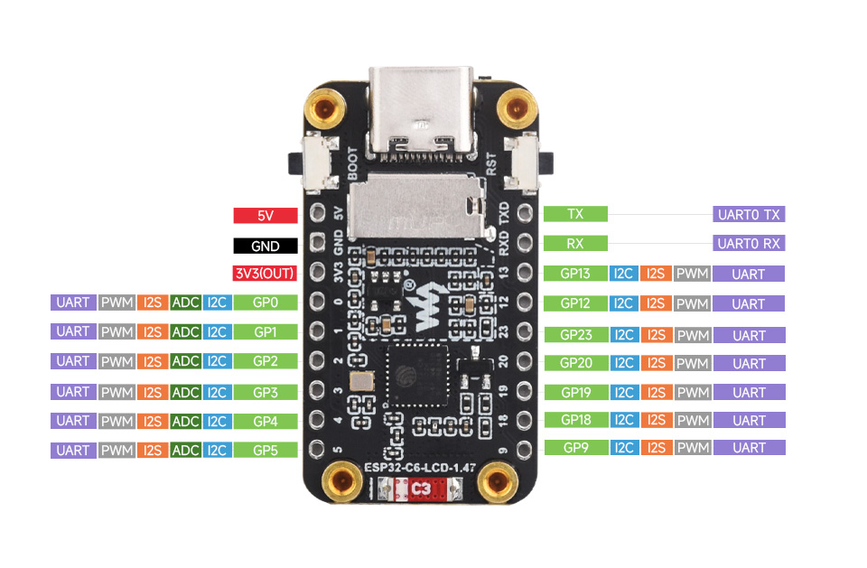
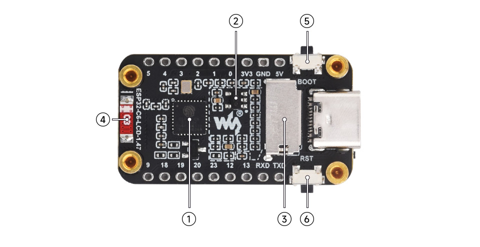
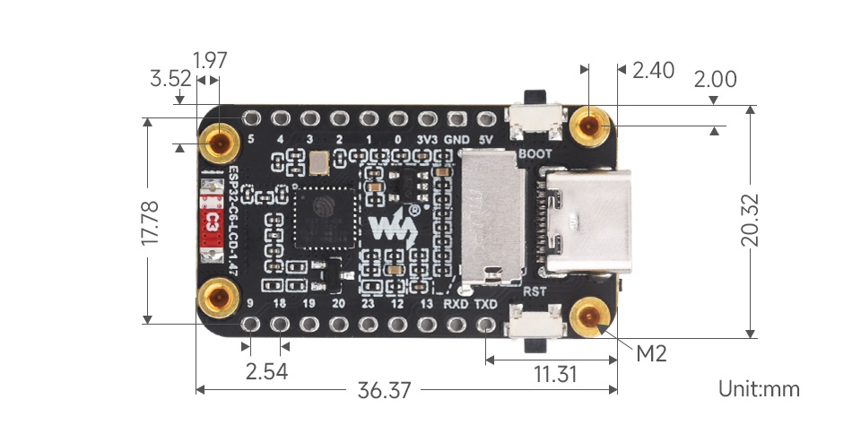

00En bref
Modèle CAO Waveshare · tournez-le à la souris
Fiche technique détaillée
| Microcontrôleur | ESP32-C6FH4 : RISC-V 32 bits à 160 MHz, plus un cœur basse consommation à 20 MHz |
| Mémoire | 512 Ko de SRAM, 16 Ko de SRAM LP, 4 Mo de Flash intégrée au boîtier, pas de PSRAM |
| Radio | Wi-Fi 6 (2,4 GHz), Bluetooth 5 LE, IEEE 802.15.4 (Zigbee, Thread), antenne céramique |
| Écran | 1,47″ IPS, 172 × 320, 262K couleurs, contrôleur ST7789 en SPI |
| Extras | LED RGB adressable, lecteur microSD, boutons BOOT et RESET |
| Taille | 36,37 × 20,32 mm, 4 trous M2, broches au pas de 2,54 mm |
Beaucoup de cartes ESP32 à écran ajoutent plusieurs Mo de PSRAM pour stocker des images. Ici, tout doit tenir dans 512 Ko. L'image complète de l'écran (108 Ko) passe, mais pas question d'en stocker dix. Voir le rendu hors écran.
01Le bus SPI partagé
L'écran et le lecteur microSD sont branchés sur le même bus SPI. Ils partagent les fils de données et d'horloge. Chacun a sa propre ligne CS (Chip Select) : le microcontrôleur abaisse le CS de celui à qui il parle, et l'autre ignore le trafic.
- MOSI (Master Out, Slave In) : les données du microcontrôleur vers le périphérique.
- MISO (Master In, Slave Out) : le chemin retour. L'écran ne renvoie rien, seule la carte SD l'utilise.
- SCLK : l'horloge qui cadence chaque bit, à 40 MHz pour l'écran.
- DC, propre à l'écran : indique si l'octet envoyé est une commande (« place-toi en x, y ») ou une donnée (la couleur d'un pixel).
02Toutes les GPIO
| GPIO | Rôle sur la carte | Connecteur | Pour vos projets |
|---|---|---|---|
0 – 3 | libres · ADC · basse consommation | oui | ● Libres. Seules entrées analogiques disponibles avec 4 et 5 |
4 | CS de la carte SD · strapping | oui | ● Seulement sans carte SD |
5 | MISO de la carte SD · strapping | oui | ● Seulement sans carte SD |
6, 7 | MOSI et SCLK (écran + SD) | non | ● Occupées |
8 | LED RGB · strapping | non | ● Occupée |
9 | Bouton BOOT · strapping | oui | ● Comme bouton, oui. Ne rien y brancher qui la tire vers le bas au démarrage |
12, 13 | USB D− / D+ | oui | ● À ne pas toucher : elles portent l'USB |
14, 15, 21, 22 | CS, DC, RST et rétroéclairage de l'écran | non | ● Occupées |
16, 17 | TXD / RXD de l'UART0 | oui | ● Libres en pratique : la console passe par l'USB |
18, 19, 20, 23 | libres | oui | ● Libres (numérique : I2C, PWM, UART…) |
Toutes les fonctions numériques (I2C, PWM, UART, I2S) passent par la matrice GPIO de l'ESP32-C6. Elles peuvent donc être placées sur presque n'importe quelle broche libre. L'ADC, en revanche, n'existe que sur GPIO0 à 6.
03Les broches à éviter
Les broches de strapping : 4, 5, 8, 9, 15
Au démarrage, la puce lit l'état de ces broches pour choisir son mode : démarrage normal ou mode téléchargement, réglages internes. Un capteur qui les force à une mauvaise valeur au moment du reset peut empêcher la carte de démarrer.
| GPIO9 (BOOT) au reset | Résultat |
|---|---|
| Haut : bouton relâché, état par défaut | Démarrage normal du programme |
| Bas : bouton maintenu | Mode téléchargement : la puce attend un nouveau firmware |
L'USB : 12 et 13
Sur cette carte, GPIO12 et GPIO13 sont reliés directement au connecteur USB-C. Les configurer comme sorties dans un programme coupe l'USB : plus de console, plus de pont, plus de téléversement normal. Seul le mode téléchargement (BOOT + RESET) permet alors de reflasher.
04L'USB natif
La plupart des cartes ESP32 ont une puce USB-série séparée (CH340, CP2102). Ce n'est pas le cas ici : l'ESP32-C6 a un contrôleur USB Serial/JTAG intégré, câblé directement sur le connecteur.
- Avantage : pas de pilote à installer sous Windows 10 et 11. La carte apparaît comme « Périphérique série USB (COMx) » avec le VID
303A(Espressif) et le PID1001. - Avantage : le débogage JTAG est possible par le même câble.
- Inconvénient : si le programme plante dès le démarrage ou désactive l'USB, le port COM disparaît. Il faut alors forcer le mode téléchargement à la main.
1. Maintenir BOOT. 2. Appuyer puis relâcher RESET. 3. Relâcher BOOT. La carte attend alors un firmware, quoi qu'il y ait en Flash. Après le téléversement, appuyer sur RESET.
Côté Arduino, l'option CDCOnBoot=cdc branche l'objet Serial sur cet USB natif. Sans elle, Serial enverrait ses données sur les broches TXD et RXD, et le pont n'entendrait rien.
05L'alimentation
flowchart LR
U["USB-C
5 V"] --> V["Broche 5V
du connecteur"]
U --> L["LDO ME6217C33
800 mA max"]
L --> T["3,3 V"]
T --> E[ESP32-C6]
T --> D["Écran + rétroéclairage"]
T --> S[Carte microSD]
T --> R[LED RGB]
T --> P["Broche 3V3
du connecteur"]
Le régulateur ME6217 est un LDO (Low Drop-Out) : il abaisse le 5 V en 3,3 V en dissipant la différence sous forme de chaleur. Ses 800 mA sont partagés entre tout ce qui est branché sur le 3,3 V. Les pics de consommation du Wi-Fi peuvent dépasser 300 mA : il faut garder de la marge avant d'alimenter des modules externes sur la broche 3V3.
06Plans et photos



07Documentation
- Wiki Waveshare ESP32-C6-LCD-1.47 : schéma, démos, modèle 3D
- Datasheet ESP32-C6 (Espressif)
- Manuel de référence technique ESP32-C6 (Espressif)
- Dans le dépôt :
docs/HARDWARE.md, la fiche matériel complète